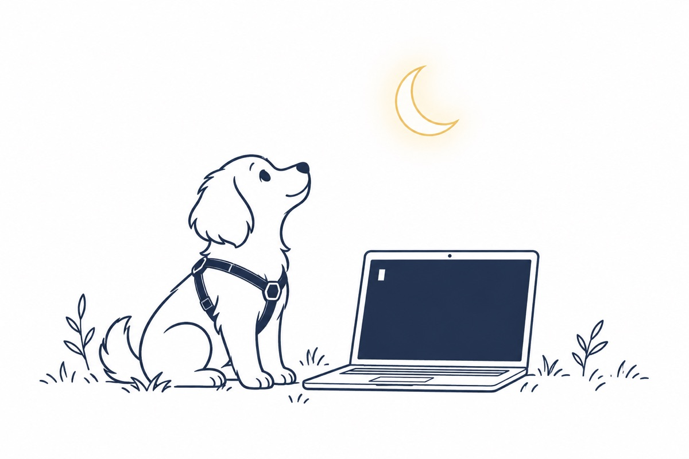

はじめての方へ · Mac

あなた専用のAIを、自分の Mac で育てるための仕組みです。このページを上から順に進めれば、パソコンに詳しくなくても動き出します。
What is LUNA
犬の散歩につけるハーネスを思い浮かべてください。走り出しそうになっても、体をそっと支えて道を外れさせない。
LUNA は、賢いけれど忘れっぽいAIにつける、そういう枠です。中のAIが新しいものに入れ替わっても、枠とあなたの記録はそのまま残ります。
仕事、暮らし、発信、事業。分野ごとに引き出しを分けて、使うほどあなたの文脈が貯まります。中身はあなたの Mac と、あなただけが開ける金庫（GitHub）に置かれます。AIの名前はセットアップで自由に決められます。
Before you start
Three tips
このページでは「ターミナル」という、文字で Mac に指示を出す画面を使います。コツは3つだけです。
自分で打たなくて大丈夫です。各コマンドの右にある「コピー」を押して、ターミナルに貼り付けます。
日本語入力のままだと、Mac は指示を理解できません。全角スペースもエラーのもとです。
Password: と出たら Mac のパスワードを打って return。●●● すら出ませんが、ちゃんと入っています。
Setup
終わったステップに印をつけておくと、次に開いたときに続きがわかります。
Last login: Fri Oct 16 10:20:01 on console you@MacBook ~ %
% の後ろに貼り付けていきます次から iTerm を開くには：⌘ command＋スペース → iterm → return
Homebrew は、AI を動かすのに必要な道具をまとめて入れてくれる仕組みです。スマホの「App Store」のようなものです。次の1行をコピーして、iTerm に貼り付けて return。
/bin/bash -c "$(curl -fsSL https://raw.githubusercontent.com/Homebrew/install/HEAD/install.sh)"
Password: と出たら、Mac のパスワードを打って returnPress RETURN/ENTER to continue と出たら return==> Installation successful! ==> Next steps: - Run these commands in your terminal to add Homebrew to your PATH: echo >> /Users/you/.zprofile echo 'eval "$(/opt/homebrew/bin/brew shellenv)"' >> /Users/you/.zprofile eval "$(/opt/homebrew/bin/brew shellenv)" you@MacBook ~ %
Next steps: の下に出た行を、上から1行ずつコピーして貼り付け、return。画面に出たとおりでかまいません。多くの Mac では次の2行と同じです。echo 'eval "$(/opt/homebrew/bin/brew shellenv)"' >> ~/.zprofile
eval "$(/opt/homebrew/bin/brew shellenv)"
できたか確かめる：
brew --version
Homebrew 4.x.x のように数字が出れば成功です。GitHub は、あなたのAIの中身（メモや記録）を預けておくインターネット上の金庫です。Mac が壊れても消えず、あなた以外には見えません。
github.com/signup で登録し、届いたメールのコードを入れて完了します。
brew install gh
gh auth login
英語で質問が出ます。矢印キー ↑↓ で選んで return。
| 画面に出る質問 | 意味 | 選ぶもの |
|---|---|---|
| Where do you use GitHub? | どこの GitHub？ | GitHub.com |
| What is your preferred protocol…? | つなぎ方は？ | HTTPS |
| Authenticate Git with your GitHub credentials? | この Mac でもログインしておく？ | Y を打って return |
| How would you like to authenticate…? | どうやってログインする？ | Login with a web browser |
? Where do you use GitHub? GitHub.com ? What is your preferred protocol for Git operations? HTTPS ? Authenticate Git with your GitHub credentials? Yes ? How would you like to authenticate GitHub CLI? Login with a web browser ! First copy your one-time code: 1A2B-3C4D Press Enter to open github.com in your browser... ✓ Authentication complete. ✓ Logged in as yourname
✓ Logged in as あなたのユーザー名 と出れば成功です。curl -fsSL https://claude.ai/install.sh | bash
claude --version
2.x.x (Claude Code) のように数字が出れば成功です。3行を、1行ずつ貼り付けて return。
mkdir -p ~/Claude && cd ~/Claude
gh repo create my-ai --private --template a81359441/luna-os --clone
cd my-ai
you@MacBook Claude % gh repo create my-ai --private --template ... ✓ Created repository yourname/my-ai on GitHub Cloning into 'my-ai'... you@MacBook Claude % cd my-ai you@MacBook my-ai %
my-ai % になれば、自分のAIのフォルダの中にいますclaude "setup"
最初の1回だけ、英語でいくつか聞かれます。
| 画面に出るもの | 意味 | すること |
|---|---|---|
| Choose the text style… | 画面の色合い | 好きなものを選んで return |
| Select login method | ログイン方法 | Claude account with subscription |
| （ブラウザが開く） | Claude にログイン | いつものアカウントで「承認」 |
| Do you trust the files in this folder? | このフォルダを信用する？ | Yes, proceed |
ここを抜けると、AIが日本語で話しはじめます。名前、あなたの呼び方、いま頭を使っていること。1つずつ聞かれるので、普通に日本語で答えてください。AIの名前を決めると、その名前で呼び出せるようにAIが設定してくれます。途中で「実行してよいか」と英語で聞かれたら、Yes を選んでください。
✻ Welcome to Claude Code ● はじめまして。最初に3つだけ決めましょう。 まず、わたしのことを何と呼びたいですか？ （例：ルナ、ハル、相棒） >
次からは、iTerm を開いて、AIの名前（英小文字）を打つだけです。たとえば名前がルナなら：
luna
話が一段落したら「締めて」。AIがその日の内容を記録します。
終わるときは control＋C を2回。
ときどき「ログインして」と言われたら（Please run /login など。故障ではありません）
/login と打って return（選択肢がもう出ていれば飛ばす）Claude account with subscription を選ぶ。ほかの2つは選ばないTroubleshooting
まず、iTerm を完全に終了して（⌘ command＋Q）開き直してください。これだけで直ることがとても多いです。
| 画面に出た言葉 | よくある原因 | 直し方 |
|---|---|---|
command not found: brew | ステップ2の最後の行を貼り忘れた | その行を貼り付けて、iTerm を開き直す |
command not found: claude やAIの名前 | Mac が新しい道具にまだ気づいていない | 下の1行を貼り付けて、開き直す |
| プランがない、と言われる | Claude が無料プランのまま | claude.ai で Pro 以上にして、入力欄で /login |
| 反応しない、変な文字が出る | 日本語入力のまま打った | 英数 を押して、コピー＆貼り付けでやり直す |
echo 'export PATH="$HOME/.local/bin:$PATH"' >> ~/.zshrc
ステップ6まで進めていれば、エラーをAIに貼り付けて「これは何？」と聞けば教えてくれます。その前なら、画面のスクリーンショット（⌘＋shift＋4）を、このページをくれた人に送ってください。